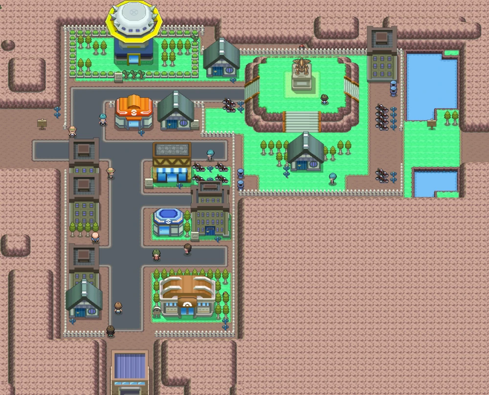
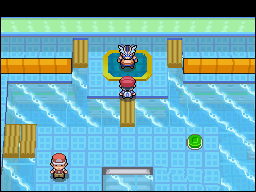

Sinnoh
Está al norte de Kanto.
La región de Sinnoh, presenta una cantidad de climas muy variados pero predominan los fríos.
La región es mayormente terrestre, con solo cinco rutas marinas.
Sinnoh:
Las diferentes ciudades, pueblos y rutas que forman Johto son las siguientes:
-
Pueblo Hojaverde
- Casa del jugador
- Casa del rival
- Lago Agudeza
-
Pueblo Arena
- Centro pokémon
- Tienda
- Casa de Maya/Leo
- Laboratorio del Prof. Serball
-
Ciudad Jubileo

- Centro pokémon
- Tienda
- Escuela de entrenadores
- Jubileo TV
-
Ciudad Pirita
- Centro pokémon
- Tienda
- Museo de restauración
- Mina Pirita
-
Gimnasio pokémon de tipo roca
-
Pueblo Aromaflor
- Centro pokémon
- Tienda
- Comercio de bayas
- Valle eólico
- Forja fuego
- Bosque Vetusto
-
Ciudad Vetusta

- Centro pokémon
- Tienda
- Casa del hombre topo
- Casa del inspector de motes
- Estatua
- Tienda de bicicletas
- Base Galaxia
-
Gimnasio pokémon de tipo planta
-
Ciudad Corazón
- Centro pokémon
- Tienda
- Parque compi
- Estadio de concursos
- Casa de Tecla
- Pastelería de pokochos
-
Gimnasio pokémon de tipo fantasma
- Mansion pokémon
-
Pueblo Sosiego
- Centro pokémon
- Tienda
- Guardería
- Torre sosiego
- Ruinas Sosiego
-
Ciudad Rocavelo
- Centro pokémon
- Centro comercial
- Central Galaxia
- Casino
-
Gimnasio pokémon de tipo lucha
- Lago Valor
- Pueblo *
-
Ciudad Pradera
- Centro pokémon
- Tienda
- Zona safari
- Pantano
-
Gimnasio pokémon de tipo agua

-
Ciudad Canal
- Centro pokémon
- Tienda
- Puerto
-
Gimnasio pokémon de tipo acero
- Isla Hierro
-
Pueblo Caelestis
- Centro pokémon
- Tienda
- Herboristería
- Lago Veraz
-
Ciudad Puntaneva
- Centro pokémon
- Tienda
-
Gimnasio pokémon de tipo hielo
-
Ciudad Marina
- Centro pokémon
- Tienda
- Tienda de sellos
- Faro
- Playa Marina
-
Gimnasio pokémon de tipo eléctrico
- Calle Victoria
- Liga pokémon
- Bahía Gresca
-
Zona Sobrevivir
-
Zona Descanso
-
Zona de combate
- Frente batalla
- Torre Batalla
- Fábrica Batalla
- Sala Batalla
- Ruleta Batalla
- Castillo Batalla
En Sinnoh se pueden enccontrar 107 especies de pokémons nativos:
- - Turtwig
- - Grotle
- - Torterra
- - Chimchar
- - Monferno
- - Infernape
- - Piplup
- - Prinplup
- - Empoleon
- - Starly
- - Staravia
- - Staraptor
- - Bidoof
- - Bibarel
- - Kricketot
- - Kricketune
- - Shinx
- - Luxio
- - Luxray
- - Budew
- - Roserade
- - Cranidos
- - Rampardos
- - Shieldon
- - Bastiodon
- - Burmy
- - Wormadam
- - Mothim
- - Combee
- - Vespiquen
- - Pachirisu
- - Buizel
- - Floatzel
- - Cherubi
- - Cherrim
- - Shellos
- - Gastrodon
- - Ambipom
- - Drifloon
- - Drifblim
- - Buneary
- - Lopunny
- - Mismagius
- - Honchkrow
- - Glameow
- - Purugly
- - Chingling
- - Stunky
- - Skuntank
- - Bronzor
- - Bronzong
- - Bonsly
- - Mime Jr.
- - Happiny
- - Chatot
- - Spiritomb
- - Gible
- - Gabite
- - Garchomp
- - Munchlax
- - Riolu
- - Lucario
- - Hippopotas
- - Hippowdon
- - Skorupi
- - Drapion
- - Croagunk
- - Toxicroak
- - Carnivine
- - Finneon
- - Lumineon
- - Mantyke
- - Snover
- - Abomasnow
- - Weavile
- - Magnezone
- - Lickilicky
- - Rhyperior
- - Tangrowth
- - Electivire
- - Magmortar
- - Togekiss
- - Yanmega
- - Leafeon
- - Glaceon
- - Gliscor
- - Mamoswine
- - Porygon-Z
- - Gallade
- - Probopass
- - Dusknoir
- - Froslass
- - Rotom
- - Uxie
- - Mesprit
- - Azelf
- - Dialga
- - Palkia
- - Heatran
- - Regigigas
- - Giratina
- - Cresselia
- - Phione
- - Manaphy
- - Darkrai
- - Shaymin
- - Arceus